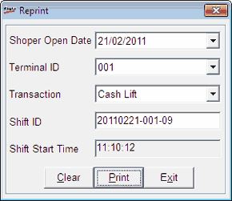

This option allows you reprint Till related transactions. The reprinting of transaction details are mostly required, if the details are lost or damaged while printing earlier.
How to reach: Cash > Till Management >Till Reprint
The Reprint window is displayed.

Shoper Open Date: Enter/ Select the Shoper date of the transaction to be reprinted.
Terminal ID: Select the terminal ID (node ID) of the Till, from the dropdown list.
Transaction: Select the transaction to be reprinted, from the dropdown list. The transactions that can be reprinted are Opening Balance, Cash Lift and Reconciliation.
Shift ID: Press F2 and select the required shift ID from the Browse window.
Shift Start Time: Displays the start time of the selected shift ID.
Note: While reprinting Cash Lifts, all the Cash Lifts carried out for the selected shift ID are printed.